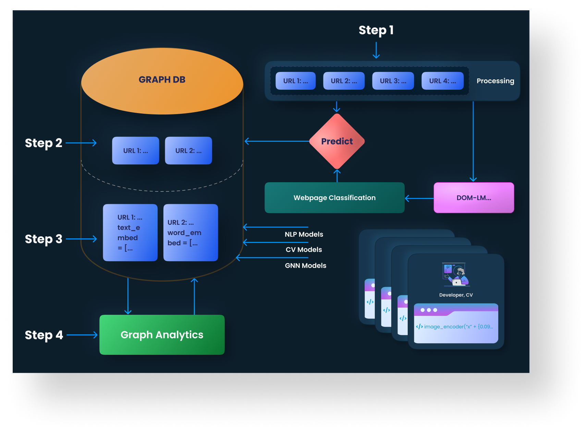

Crawler.py¶
This suite of classes contains methods that scrape data from webpages and convert data between different formats (HTML and JSON). It can retrieve HTML content from a given URL, parse the HTML to extract useful information such as images and metadata, and convert the HTML into a JSON-compatible format for easier processing and analysis.
{kind=link}
OVERVIEW¶
Table 1: URL() Methods
Method
Description
URL.check_url_exists()Checks if a URL exists in your database. This can be used to avoid duplicate entries or to verify that a specific page has been crawled.
URL.html_to_json()Convert HTML format into JSON format. This method calls the “http://199.88.191.194:5008” server to perform the conversion.
URL.json_to_html()Convert JSON format into HTML format. This method calls the “http://199.88.191.194:5008” server to perform the conversion.
URL.url_to_html()Get HTML of a given URL. This method calls the “http://”
Table 2. WarcIndexer() Methods
Method
Description
WarcIndexer.check_remote_update()This method checks if there are any indexers that need to be updated. It is useful for maintaining the freshness of the data.
WarcIndexer.get_remote_indexers()This method checks if there are any indexers to update and writes the updated indices to a JSON file. This provides a persistent record of the indices and their updates.
WarcIndexer.get_local_indexers()This method fetches a list of indexers that are currently available in the Common Crawl index. It is useful for understanding the scope of data available for crawling. The filename parameter is optional and defaults to ‘indices.json’.
WarcIndexer.update_indexers()This method is responsible for updating the indexers. It ensures that the indexers are up-to-date with the latest data from the Common Crawl.
Table 3. WarcHandler()
Method
Description
WarcHandler.get_warc_url()This method returns a dictionary where the keys are the indices and the values are the lists of WARC URLs for each index. This provides a comprehensive view of the data available for each index.
WarcHandler.get_html_from_warc()This method fetches the HTML content of a WARC file. This is a crucial step in the data extraction process, as it allows for the parsing and analysis of the web page content.
WarcHandler.get_random_html()This method retrieves the HTML content from a random WARC file. This can be useful for testing or exploratory analysis. If the request fails, it returns None to handle the failure gracefully.
WarcHandler.get_warc_urls()This method returns a list of WARC URLs for a given index. These URLs can be used to access the raw data stored in the Common Crawl.